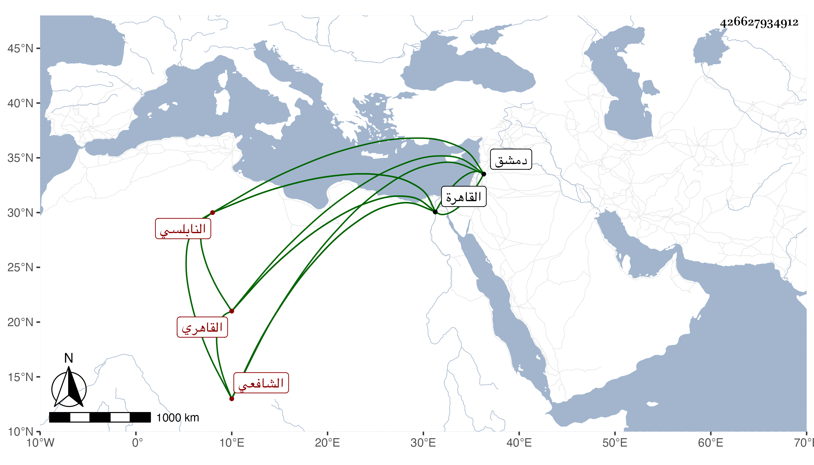

0902Sakhawi.DawLamic.ITO20230111-ara1.EIS1600.426627934912
Biography ID: 426627934912
718
كلثوم ابنة عمر بن صالح أم محمد ابنة الزين أبي حفص بن الصلاح النابلسي الأصل القاهري الشافعي . ولدت تقريبا سنة اثنتين وسبعين وسبعمائة بالقاهرة وسافرت مع أبيها لدمشق وهي مرضع فأقامت معه هناك نحو عشر سنين وأسمعها الصحيح على أبي المحاسن يوسف بن الصيرفي وقرأت القرآن بتمامه وكتبت الخط الحسن ثم رجعت بعد وفاة أبيها إلى القاهرة فأقامت بها وحدثت بالصحيح سمعته مع غيره عليها وسمع منها الأئمة ، وكانت خيرة ذات فهم وعقل وتثبت وجد بخطها :
| احفظ لسانك واستعذ من شره | ان اللسان هو العدو الكاشح |
| وزن الكلام اذا نطقت بمجلس | وزنا يلوح لك الضياء اللائح |
| فالصمت من سعد السعود وانه | زين الفتى والنطق سعد الذابح |
ماتت في رمضان سنة ست وخمسين رحمها الله .
